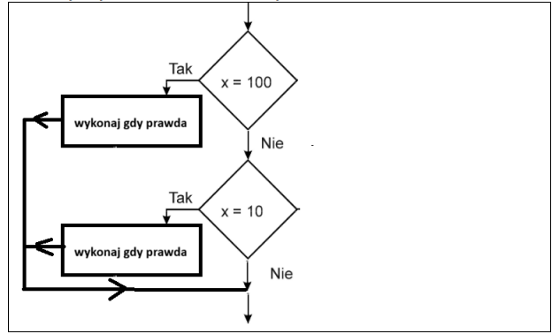
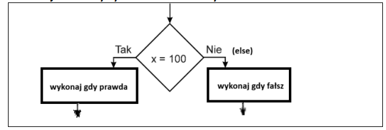

if (warunek_logiczny1)
{
// instrukcje jeśli warunek_logiczny1 prawdziwy
}
if (warunek_logiczny2)
{
// instrukcje jeśli warunek_logiczny2 prawdziwy
}

if (warunek_logiczny)
{
// instrukcje jeśli warunek_logiczny prawdziwy
}
else
{
// instrukcje jeśli warunek_logiczny fałszywy
}

| Operator | Opis | Przykład |
|---|---|---|
| == | jest równe | 2==3 wynik → fałsz |
| != | nie jest równe | 2!=3 wynik → prawda |
| > | jest większe | 25>3 wynik → prawda |
| < | jest mniejsze | 2<3 wynik → prawda |
| >= | większe lub równe | 25>=3 wynik → prawda |
| <= | mniejsze lub równe | 2<=3 wynik → prawda |
| Operator | Opis | Przykład |
|---|---|---|
| && | i | x=3 y=4 (x < 9 && y > 2) wynik → prawda |
| || | lub | x=3 y=4 (x==8 || y==6) wynik → fałsz |
| ! | zaprzeczenie | x=3 y=4 !(x==y) wynik → prawda |